Case studies: three places in the UAE that changed
Each picture below is two real Sentinel-2 photos of the same place. Drag the slider to move between them. The coloured marks are what each method flagged as changed. There is no answer key for these sites, so the marks are shown for inspection and are not scored.
Model: baseline, seed 42. Both thresholds were fitted
on labelled validation scenes of the OSCD benchmark and applied here unchanged. Full write-up:
CASE_STUDIES.md. Benchmark results: V2_RESULTS.md.
Back to the project page.
Expo 2020 site, Dubai South
Open desert became the Expo 2020 exhibition site. Site development began in March 2016 and the Expo ran from 1 October 2021 to 31 March 2022, so the first window is before any work and the second is while the Expo was open.
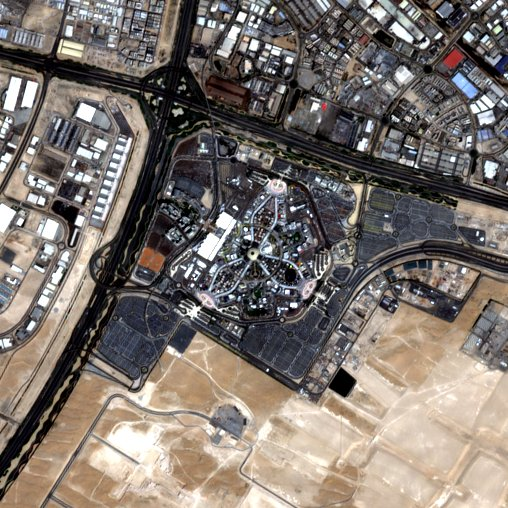
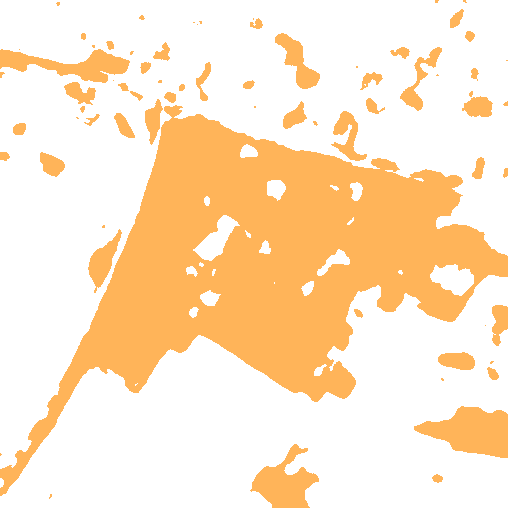
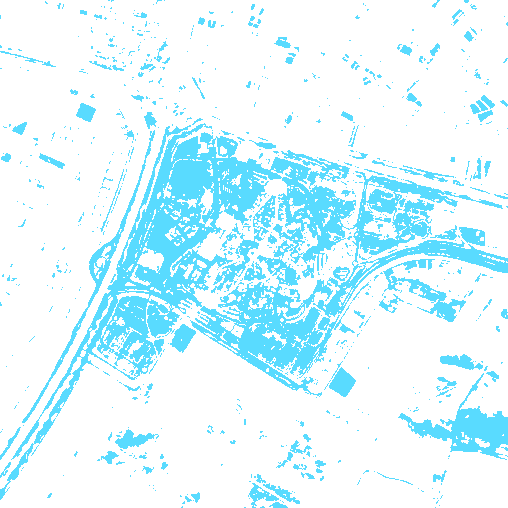
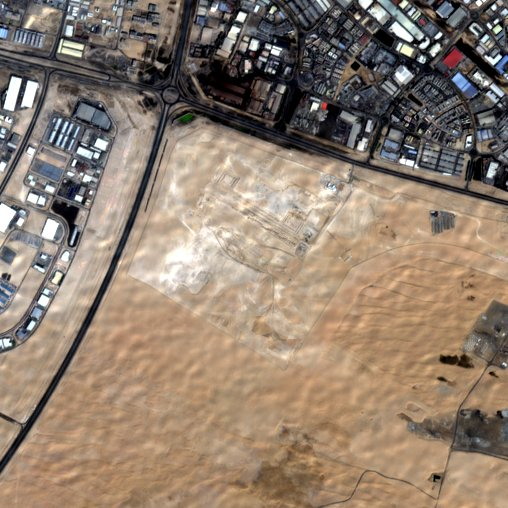
Before 2016 After 2022Sources for the change and its dates:
- Gulf Construction: site development began in March 2016
- Jacobs: 438-hectare site, open 1 October 2021 to 31 March 2022
- Wikipedia: Expo 2020 (coordinates, dates)
Al Dhafra Solar PV, Abu Dhabi
A 2 GW solar plant covering more than 20 square kilometres was built on open desert. Construction began in 2020, panel installation finished in April 2023 and the plant was inaugurated on 16 November 2023.
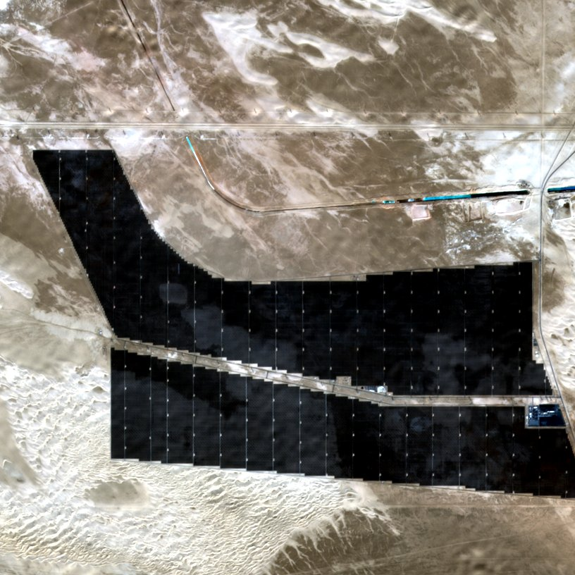
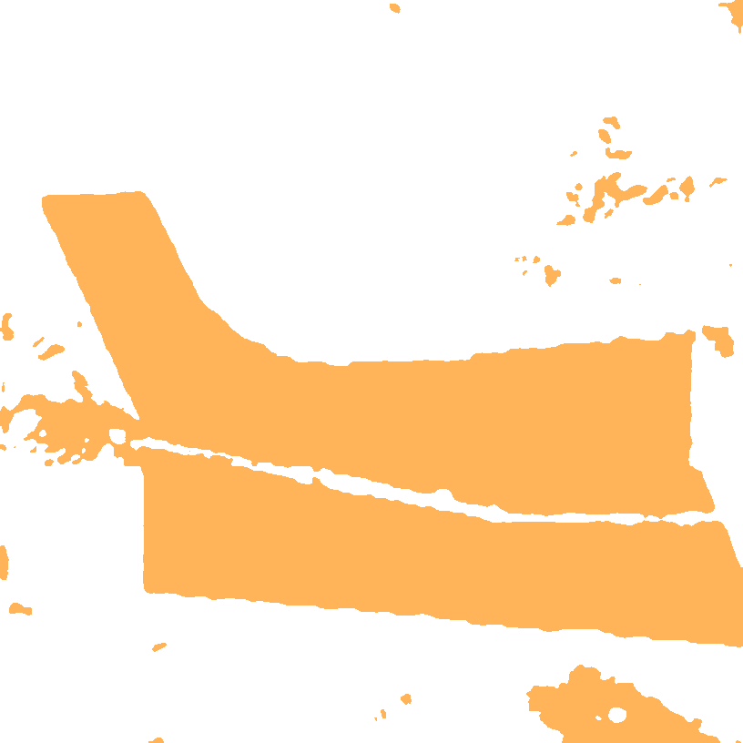
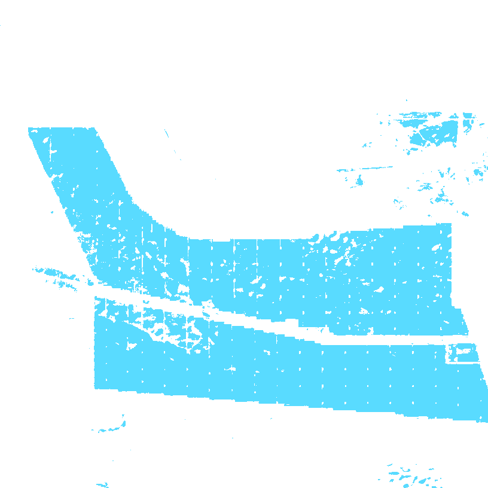
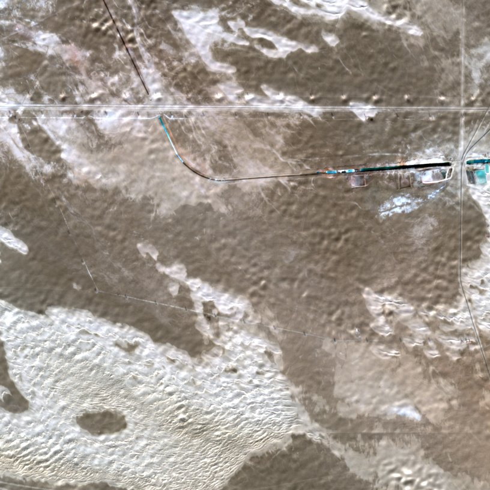
Before 2020 After 2024Sources for the change and its dates:
- PV Tech: Masdar inaugurates 2 GW Al Dhafra project (17 November 2023)
- Masdar: Al Dhafra Solar PV project page (completed 2023)
- Blackridge Research: timeline (construction from 2020, panels complete April 2023)
- Global Energy Monitor: Al Dhafra solar farm (approximate coordinates)
Mohammed bin Rashid Al Maktoum Solar Park, Dubai
New solar arrays were added to an existing solar park. Between the two windows DEWA commissioned the later stages of phase 3 (2019 to 2020), phase 5 (900 MW, August 2021 to June 2023) and phase 4 (950 MW, 2023). The scene also keeps part of the older arrays, which did not change.
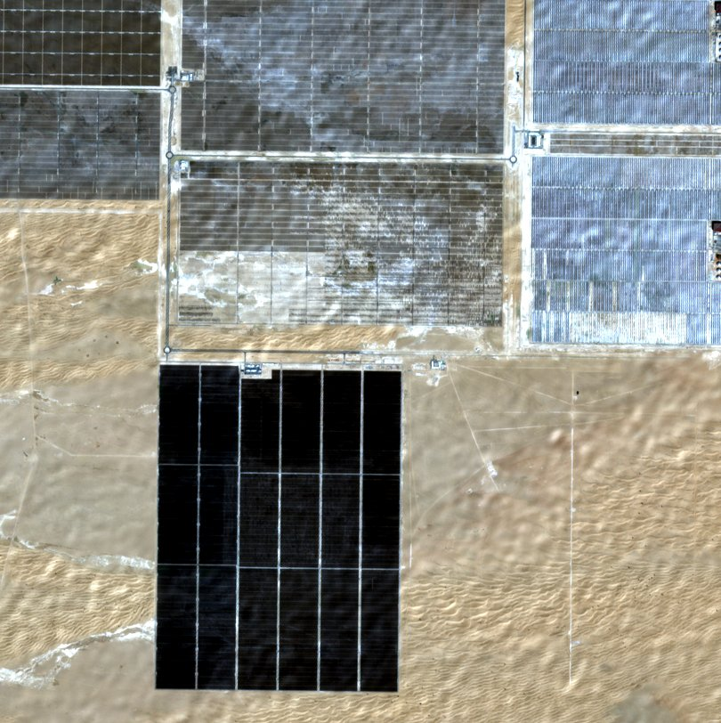
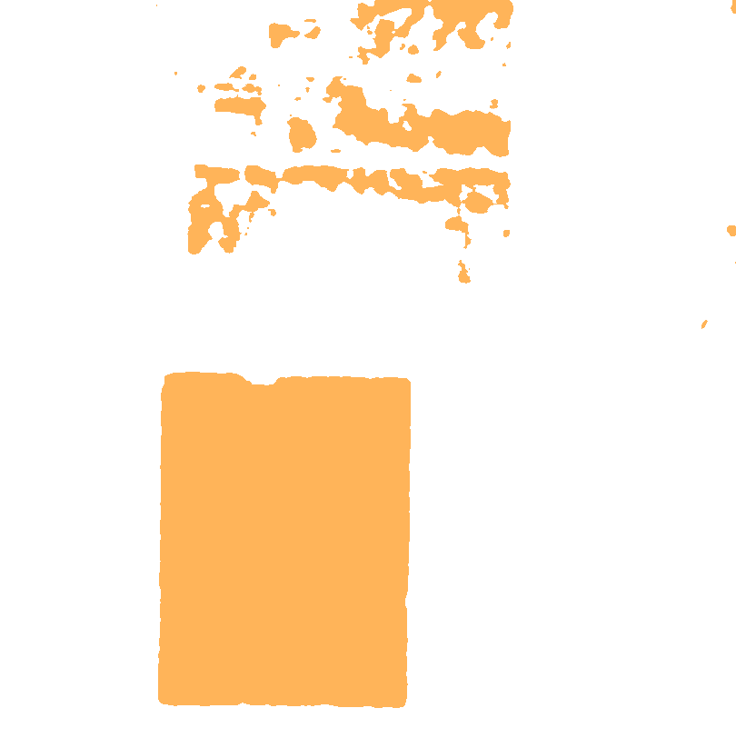
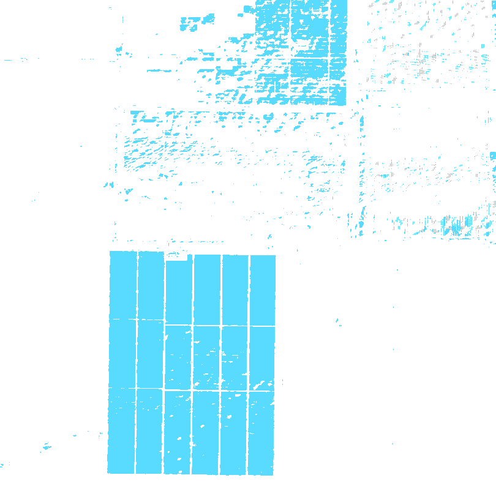
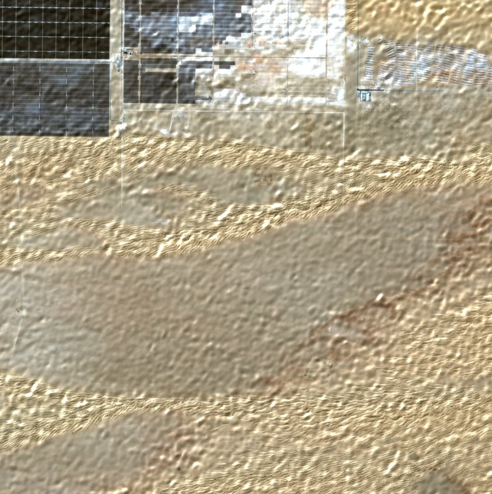
Before 2019 After 2024Sources for the change and its dates: